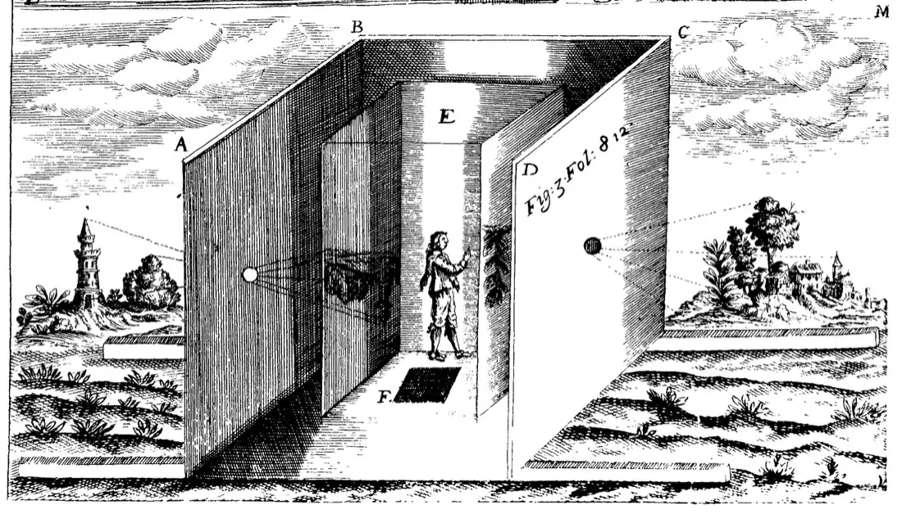
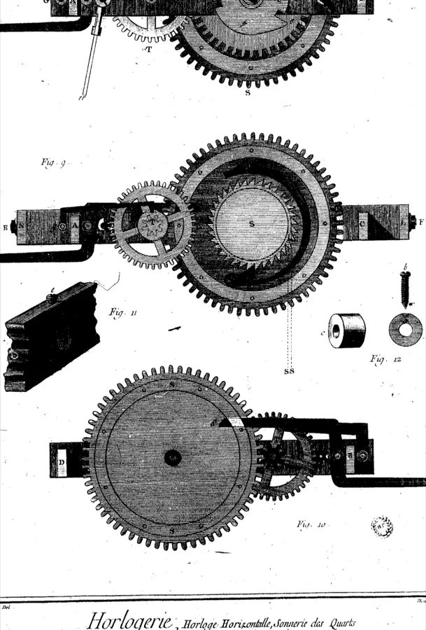
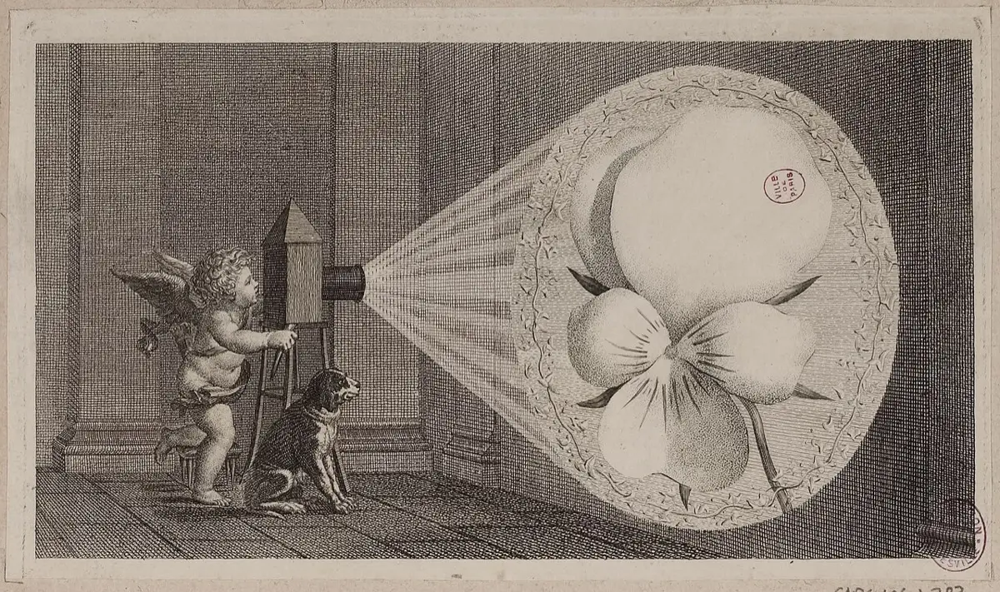
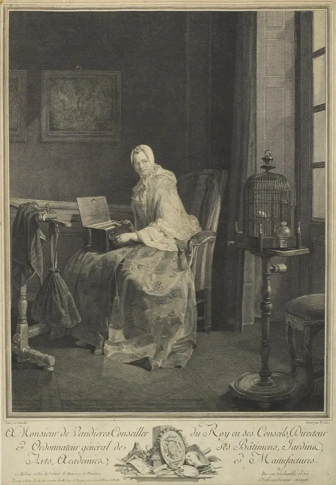
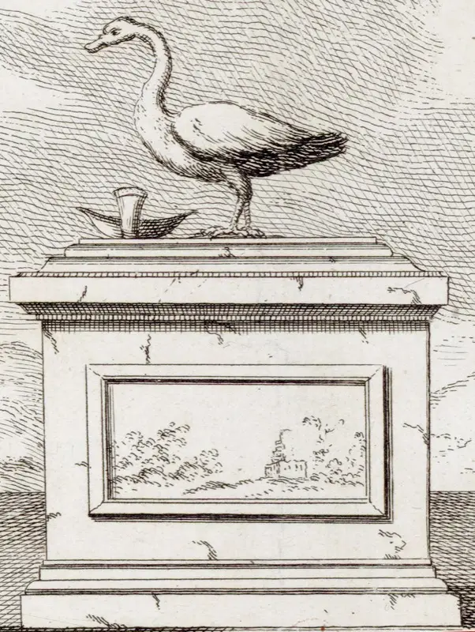
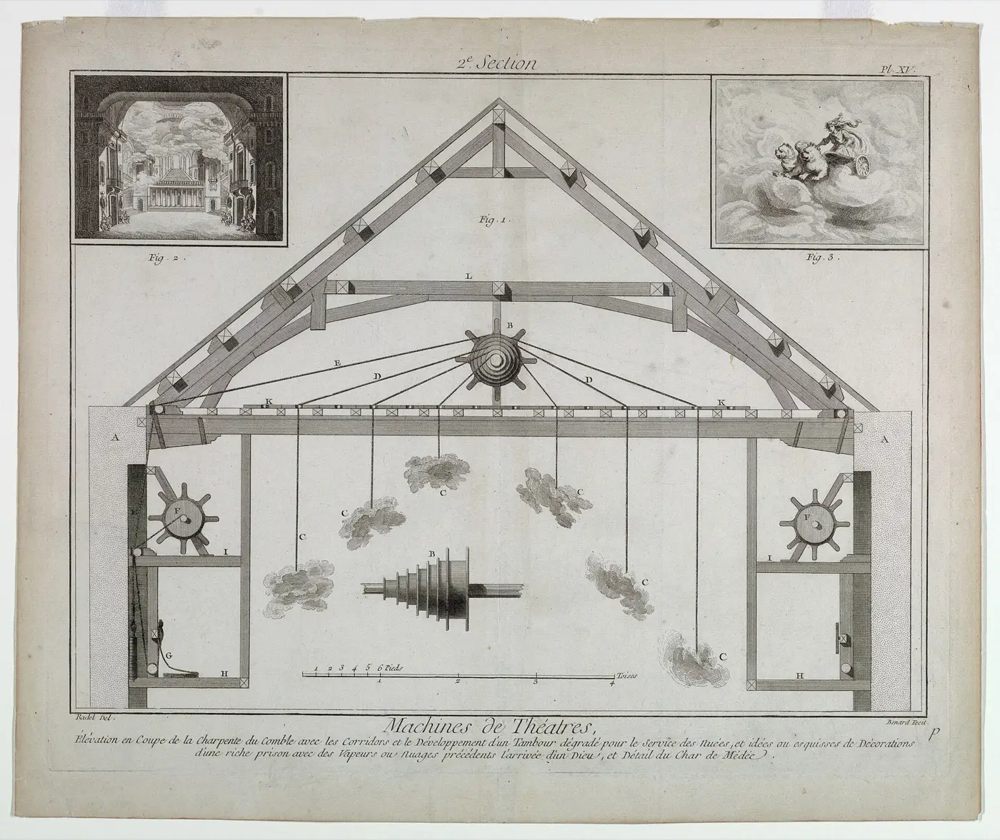
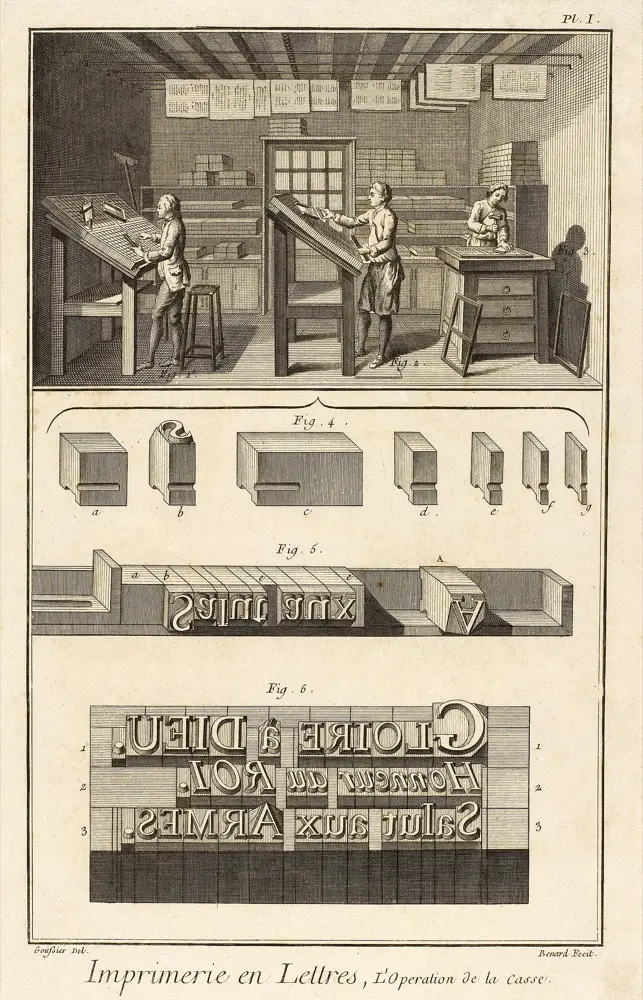
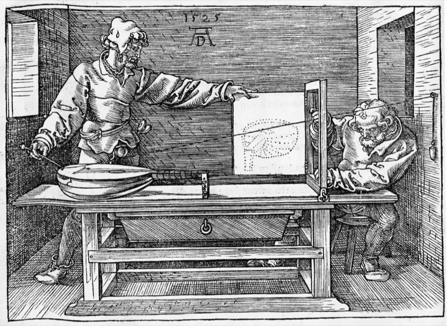
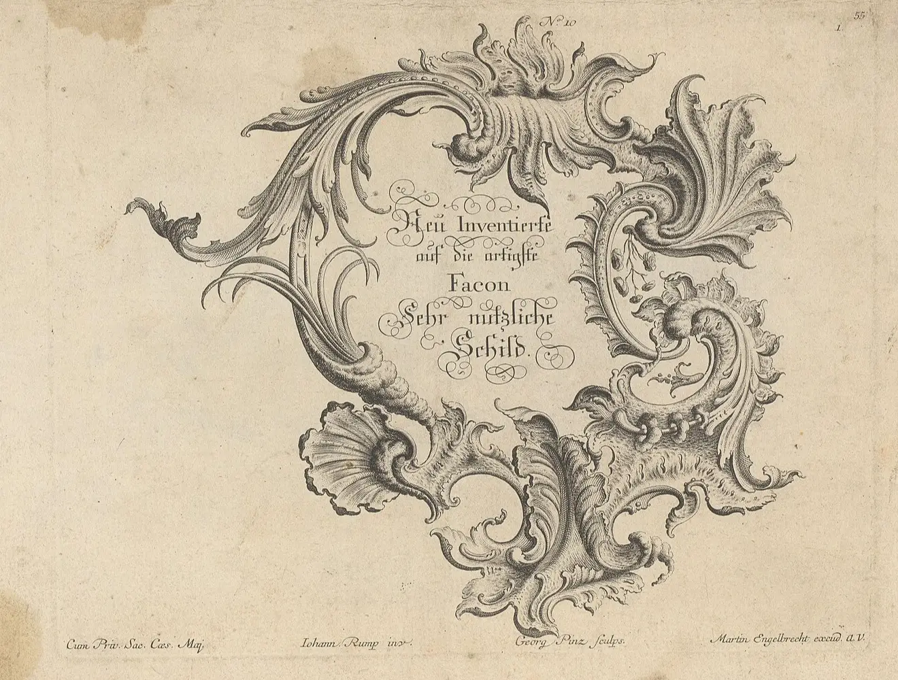
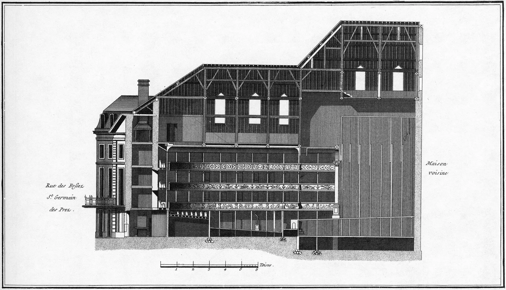

ACT I · 6 UNITS
SKILLs
Portable SKILL.md packs with three layers of disclosure. The same folder runs unchanged under Claude Code, Codex, Gemini, and OpenCode.
读法 ————→ 向右

PLATE A-01agent-designer
The skills workspace. Issue-driven workflows, an MCP tool catalog, and bridge skills for agent-to-agent delegation with session continuity.
MCPmulti-agent Open →
PLATE A-02document-SKILLs
docx, xlsx, pptx, and pdf. Extraction, forms, formulas, and tracked changes. Runs on uv with PEP 723, no virtualenv.
uvPEP 723 Open →
PLATE A-03presentation
Consulting-quality decks, from strategy storyboarding to pixel-perfect PDF or editable PPTX.
PDFPPTX Open →
PLATE A-04webmaton
Grounded web research. Citations, deterministic HTML-to-Markdown, and persistent sessions over Playwright, nodriver, and Chrome DevTools.
PlaywrightCDP Open →
PLATE A-05playwright-skill
Browser automation that also runs on Android via a Termux launcher patch and headless Chromium.
AndroidTermux Open →
PLATE A-06latex-arxiv-SKILL
Turns a topic into an arXiv-ready ML review paper. Gated literature discovery, every citation verified, compiled to a two-column IEEEtran PDF.
arXivIEEEtran Open →ACT II · 6 UNITS
Harnesses & runtimes
Stage gates, orchestration, and plumbing. The tooling that keeps an agent honest from plan to verify.
←———— 向左 读法

PLATE B-01automaton
A stage-gated harness. Frame, plan, review, execute, verify, resume. Installs as plain markdown.
stage gatesmarkdown Open →
PLATE B-02automux
Multi-agent orchestration in tmux or kitty, coordinating through files across parallel git worktrees.
tmuxworktrees Open → PLATE B-03openclaw-monorepo
A repo-local OpenClaw workspace with JSON5 config, plugins, and Docker sandboxes.
JSON5Docker Open → PLATE B-04markmaton
HTML to Markdown for agent pipelines. A Go parser core wrapped in a Python CLI and API, on PyPI.
GoPyPI Open →
PLATE B-05docker-for-apple-container
A stateless docker shim over Apple’s native container CLI on macOS, with no Docker Desktop.
macOScontainer CLI Open →
PLATE B-06pi-arcweld
A curated local layer welded to pinned upstream Pi. Extensions, system guidance, and MCP tooling join along one auditable seam, over a reproducible runtime.
MCPpinned upstream Open →ACT III · 7 UNITS
On-device MLX
Pure MLX on the Apple GPU. Speech, vision, video, 3D, and atomistic simulation that never leave the machine.
读法 ————→ 向右
mlx-speech
Speech synthesis, voice cloning, dialogue, sound effects, and recognition, MLX-native on the Apple GPU.
TTSASR Open → PLATE C-02tnt-asr
A terminal voice-to-text TUI. Qwen3-ASR transcribes in about a second, fully local.
Qwen3-ASRTUI Open → PLATE C-03ltx-video-mlx
Text- and image-to-video with synchronized audio on LTX-2.3 22B. On-device LoRA fine-tuning.
LTX-2.3 22BLoRA Open → PLATE C-04mlx-cv
Open-vocabulary grounding, detection, depth and camera geometry, segmentation, and video tracking in pure MLX. Every model is checked against its upstream reference before it ships.
SAM 3boxes + masks + depth Open → PLATE C-05mlx-spatial
3D and spatial inference on device with SAM 3D Objects, TRELLIS.2, WorldMirror, and MapAnything.
TRELLIS.23D Open → PLATE C-06mlx-atomistic
Atomistic simulation on Apple silicon. A DFT and molecular-dynamics runtime on MLX and Metal, running on the GPU the Mac already has.
DFT + MDMetal Open → PLATE C-07mlx-h3
MiniMax-H3 text to video and stereo audio, denoised together in one packed sequence. Phase-scoped model residency, no PyTorch at runtime.
MiniMax-H3video + audio Open →Act IV · coda
Creative harnesses
The same stage-gated method, pointed at club music.
setloom
Producer-first co-production for club music. Musical intent into editable tracks, stems, renders, and listening notes, with the human keeping the taste gate.
club musicstems Open →